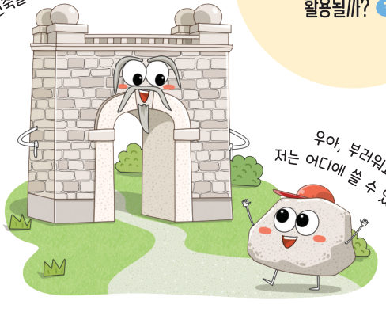
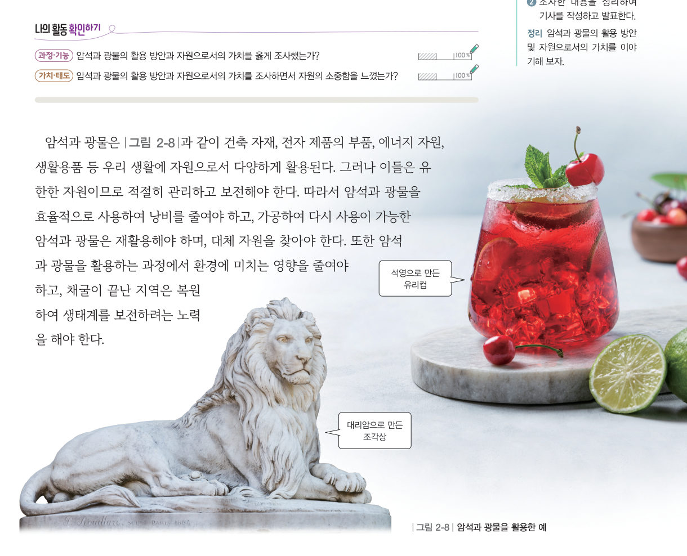
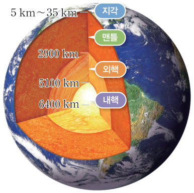

살아있는 교과서 · Ⅱ. 지권의 변화 · 1. 지권의 구성 · 04 56~58쪽
다양하게 활용되는
다양하게 활용되는
암석과 광물
“나는 단단해서 건축물이 될 수 있었지!” “우아, 부러워요. 저는 어디에 쓸 수 있을까요?” 암석과 광물은 우리 생활에 어떻게 활용될까? 자원 시계로 광물이 바닥나는 때를 늦추는 방법을 실험해 보자.
🎯 이 단원을 배우면 — 암석과 광물의 활용 방안 및 자원으로서의 가치를 설명할 수 있다.
탐구 전 활동문제 인식 56쪽
암석은 오래전부터 조각상, 건축물 등의 재료로 사용되었다. 또한 광물은 기계, 장비, 장식품, 생활용품 등의 재료로 다양하게 사용되었다. 독립문, 숭례문 등 우리 주변에는 암석으로 만들어진 수많은 건축물을 볼 수 있다.
1우리 학교에 세워진 조각상이나 건축물을 이루는 암석을 예상해 보자.
탐구암석과 광물의 활용 방안 및 자원으로서의 가치 알아보기 56~57쪽
- 모둠별로 분야(건축, 예술, 의료 등)를 정하고, 해당 분야에서 암석과 광물을 활용한 예를 조사한다.
- 암석과 광물의 자원으로서의 가치를 조사한다. (검색어: 자원의 특성, 자원의 유한성, 광물 고갈 우려)
- 조사한 내용을 공유 플랫폼에 올려 친구들과 공유한다.

1암석·광물과 활용 예를 알맞게 짝 지어 보자.
💬정리해 볼까 우리 모둠이 정한 분야에서 암석과 광물을 활용한 예를 조사해 정리해 보자.
교과서유한한 자원, 암석과 광물 57쪽
암석과 광물은 건축 자재, 전자 제품의 부품, 에너지 자원, 생활용품 등 우리 생활에 자원으로서 다양하게 활용된다. 그러나 이들은 유한한 자원이므로 적절히 관리하고 보전해야 한다. 따라서 암석과 광물을 효율적으로 사용하여 낭비를 줄여야 하고, 가공하여 다시 사용이 가능한 암석과 광물은 재활용해야 하며, 대체 자원을 찾아야 한다. 또한 암석과 광물을 활용하는 과정에서 환경에 미치는 영향을 줄여야 하고, 채굴이 끝난 지역은 복원하여 생태계를 보전하려는 노력을 해야 한다.
자원 시계광물이 바닥나는 때를 늦춰 보자
어떤 광물이 땅속에 1000만 톤 남아 있고 지금은 1년에 20만 톤을 캐서 쓴다고 하자. 사용량은 해마다 늘어나요. 재활용률·절약·대체 자원을 바꾸어 바닥나는 해가 얼마나 늦어지는지 확인해 보자.
바닥나는 데 걸리는 시간-
처음 설정보다-
1사용량 증가율 3 %, 재활용률 50 %로 바꾸면, 바닥나는 데 걸리는 시간은 재활용을 하지 않을 때보다 . 재활용률 50 %일 때 약 년이다.
스스로 확인하기56쪽 학습 목표를 달성했는지 확인해 보자 57쪽
1개념 확인 암석과 광물은 ( ) 자원이므로 적절히 관리하고 보전해야 한다.
2사고력 암석과 광물이 고갈되는 문제를 해결하기 위해 일상생활에서 할 수 있는 노력을 이야기해 보자.
더 해 보기 · 기사 작성하기
암석과 광물의 활용 방안 및 자원으로서의 가치를 조사하여 기사를 작성해 보자.
🧩 첫 번째 블록 · 힌트 조각 3 (57쪽)
지각에 분포한 암석과 ( )은/는 우리 생활에 다양하게 활용된다.
5분 테스트다양하게 활용되는 암석과 광물
1우리 생활 곳곳에 과 이 활용되고 있다. 유리컵을 만드는 데 이용되는 광물은
2옳으면 O, 옳지 않으면 X
| ③ 암석과 광물은 무한한 자원이다. | |
| ④ 암석과 광물은 재활용할 수 있다. | |
| ⑤ 암석과 광물을 보전하기 위해 사용하지 말아야 한다. | |
| ⑥ 암석과 광물은 적절하게 관리하고 보전할 수 있다. | |
| ⑦ 광물과 암석을 활용할 때 환경에 미치는 영향은 줄일 수 없다. |
스스로 정리하기1. 지권의 구성 · 첫 번째 블록 찾기 58쪽
1지구계의 구성 요소
⑴ : 지구를 이루는 여러 요소가 서로 영향을 주고받는 하나의 계
⑵ (지구 표면과 지구 내부) · 수권(지구에 있는 물) · (지구를 둘러싸고 있는 대기) · 생물권 · 외권
⑵ (지구 표면과 지구 내부) · 수권(지구에 있는 물) · (지구를 둘러싸고 있는 대기) · 생물권 · 외권
2지권의 층상 구조와 특징

지권은 지각, , 외핵, 내핵의 네 층 — 외핵은 , 내핵은 상태로 추정
3광물의 특성 · 4암석과 광물의 활용
: 암석을 이루는 주된 광물(석영, 장석, 흑운모, 각섬석, 휘석, 감람석 등)
광물을 구별할 수 있는 특성: 색, , 굳기, 염산 반응, 자성 등
암석과 광물은 유한한 자원이므로 적절히 관리하고 보전해야 한다.
광물을 구별할 수 있는 특성: 색, , 굳기, 염산 반응, 자성 등
암석과 광물은 유한한 자원이므로 적절히 관리하고 보전해야 한다.
🧩 첫 번째 블록 찾기 · 국가지질공원에서 본 암석과 관련된 지구계 구성 요소는 어떤 특징이 있을까?
① 국가지질공원에서 볼 수 있는 암석은 지구계를 이루는 요소 중 지권에 해당한다. (47쪽) ② 국가지질공원에서 볼 수 있는 암석은 지권을 이루는 층 중 지각에서 볼 수 있다. (50쪽) ③ 지각에 분포한 암석과 광물은 우리 생활에 다양하게 활용된다. (57쪽)
세 조각을 모아 첫 번째 블록 질문에 답해 보자. 블록 찾기 성공!
| 나의 학습 확인하기 | 스스로 평가 |
|---|---|
| 지식·이해 지구계 구성 요소, 지권의 층상 구조, 암석과 광물의 특징과 활용을 설명할 수 있는가? | |
| 과정·기능 광물의 특성을 관찰하고 자원으로서의 가치를 조사·토의할 수 있는가? | |
| 가치·태도 자연의 신비로움과 자원의 소중함을 느꼈는가? |
제출학생 정보 · 제출하기
모든 활동을 마친 뒤 제출하면 전체가 한 번에 채점되고 피드백이 나타나요. 답안은 선생님 스프레드시트(중2 탭)에 기록돼요.